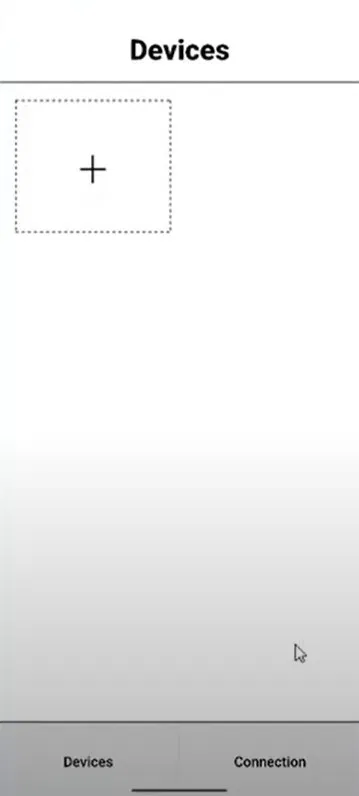
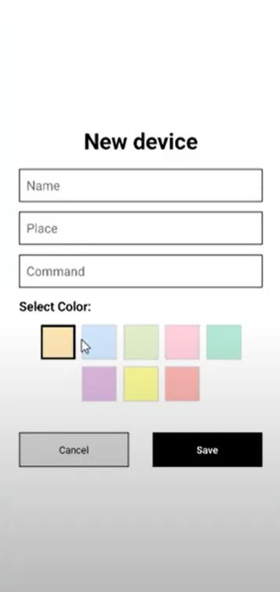
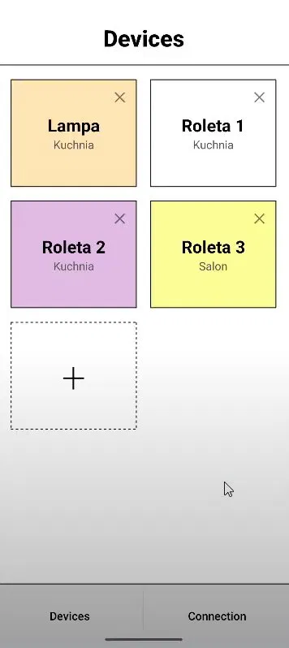

IoTApp
Cross-platform aplikacja mobilna do sterowania urządzeniami smart home — dodawaj lampy, rolety i inne urządzenia, przypisuj im miejsce, kolor i komendy sterujące. React Native 0.83, TypeScript, Android + iOS.
Aplikacja w akcji



Smart home
w zasięgu ręki
IoT App to cross-platform aplikacja mobilna do sterowania urządzeniami smart home — lampami, roletami i innymi urządzeniami IoT. Użytkownik sam definiuje urządzenia, nadaje im nazwy, przypisuje pomieszczenie, komendy sterujące i kolor identyfikacyjny.
Dolny pasek nawigacyjny przełącza między widokiem urządzeń (Devices) a konfiguracją połączenia (Connection). Aplikacja działa natywnie na Androidzie i iOS z jednej bazy kodu React Native.
Skład projektu
Stack technologiczny
Jak to działa
Aplikacja startuje z index.js, który rejestruje
główny komponent App w React Native runtime.
Metro bundluje JavaScript i przekazuje go do natywnego hosta.
// index.js
import {AppRegistry} from 'react-native';
import App from './App';
import {name} from './app.json';
AppRegistry.registerComponent(
name, () => App
);
Hook useColorScheme() odczytuje motyw systemowy
i dostosowuje StatusBar oraz style komponentów
bez potrzeby ręcznego przełączania.
function App() {
const isDarkMode =
useColorScheme() === 'dark';
return (
<SafeAreaProvider>
<StatusBar barStyle={
isDarkMode
? 'light-content'
: 'dark-content'
} />
<AppContent />
</SafeAreaProvider>
);
}
SafeAreaProvider opakowuje całą aplikację,
a useSafeAreaInsets() dostarcza marginesy
dla notchów, Dynamic Island i pasków systemowych.
function AppContent() {
const safeAreaInsets =
useSafeAreaInsets();
return (
<View style={styles.container}>
<NewAppScreen
safeAreaInsets={
safeAreaInsets
}
/>
</View>
);
}
Metro tworzy JavaScript bundle, Gradle kompiluje Kotlin i pakuje wszystko do APK/AAB. Pełny pipeline przez React Native Community CLI.
# Dev build npx react-native run-android # Release build cd android ./gradlew assembleRelease # Wynik: app-release.apk
CocoaPods zarządza zależnościami Swift/ObjC, Xcode kompiluje natywny kod iOS. Metro dostarcza JavaScript bundle dla symulatora i urządzenia.
# Instalacja zależności cd ios && pod install # Dev build npx react-native run-ios # Release: Xcode → # Product → Archive
Strict mode TypeScript z konfiguracją
@react-native/typescript-config
i ESLint do statycznej analizy kodu.
// tsconfig.json (skrót)
{
"extends":
"@react-native/typescript-config",
"compilerOptions": {
"strict": true
}
}
// ESLint: @react-native/eslint-config
Biblioteki
Jak uruchomić
git clone https://github.com/Andrii418/IoT.git cd IoT npm install
cd ios && pod install && cd ..
npm start # lub yarn start
# Android npm run android # iOS npm run ios
| Komenda | Opis |
|---|---|
| npm start | Uruchomienie Metro dev server |
| npm run android | Build i uruchomienie na Androidzie |
| npm run ios | Build i uruchomienie na iOS |
| npm test | Uruchomienie testów Jest |
| npm run lint | Statyczna analiza kodu ESLint |